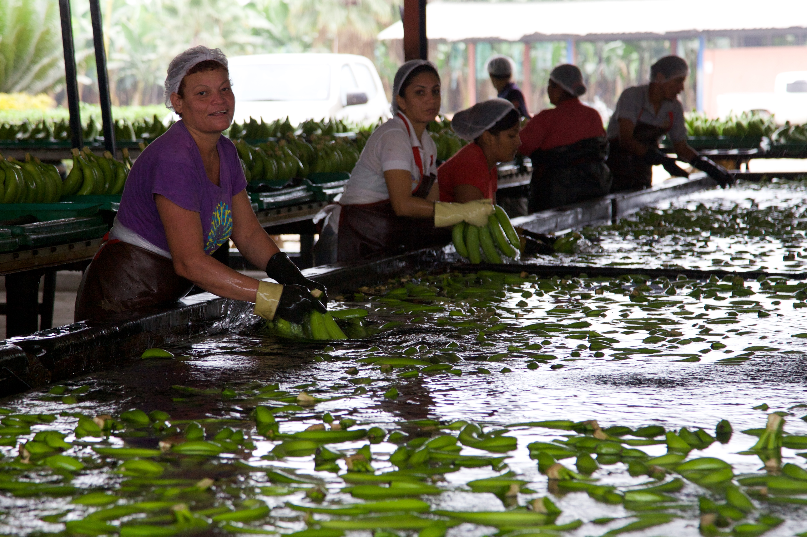
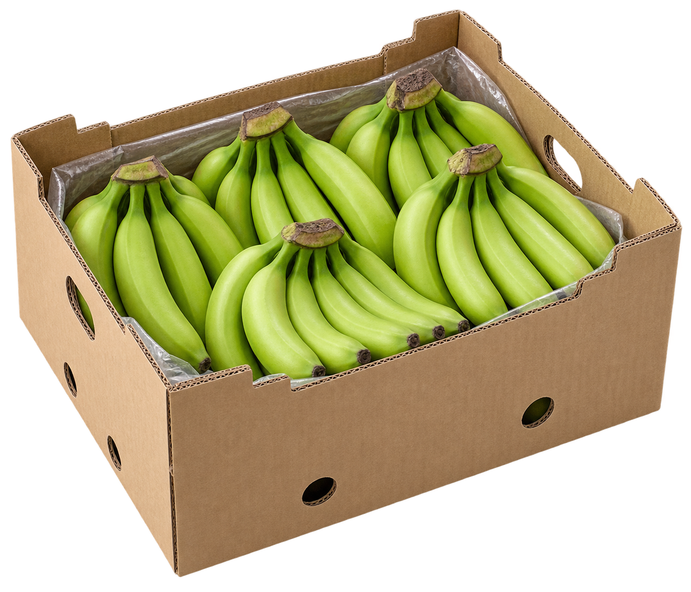

INS-024Recepción de banano
Vista interactivaPulso de captura

Foto: David Brossard · CC BY-SA 2.0 Calidad Capturer
La calidad empieza aquí.
Registra lo que observas en cada captura.
CAPTURER
Inicia sesión
Tu próxima captura te espera.
Demostración: cualquier correo válido y contraseña permiten explorar el prototipo.
Prototipo de identidad móvil
CAPTURER
Hola de nuevo, John
Inicio
Nueva captura
Empieza un registro y revisa sus datos antes de terminar.

Últimas inspecciones
Datos de ejemploINS-023Control de calidad
Contexto de la captura
01Contexto
02Revisión
Revisión de la captura
✓Contexto
02Revisión
Tu capturaSin guardar
- Referencia
- —
- Observación
- Sin observación
Calidad Capturer
Así se completa una captura.
Este ejemplo terminó. Los datos no se guardaron.
Elementos
Acciones y estados del prototipo.
Recorrido de captura
✓Contexto
02Revisión
La acción principal permanece al pie del formulario.
Acciones
Estados
✓ Confirmado◌ Pendiente! Atención
La acción deshabilitada representa una condición aún no cumplida.
Contenido y recuperación
Sin registros
Inicia una captura para ver contenido en esta sección.
No se pudo cargar
Comprueba tu conexión e inténtalo de nuevo.
Acceso no disponible
Esta sección requiere una autorización adicional.
Cargando contenido de ejemplo
Perfil
JS
JohnCuenta de demostración
Al cerrar sesión volverás a la bienvenida.
◉ Pulso de captura
/ Prototipo navegable